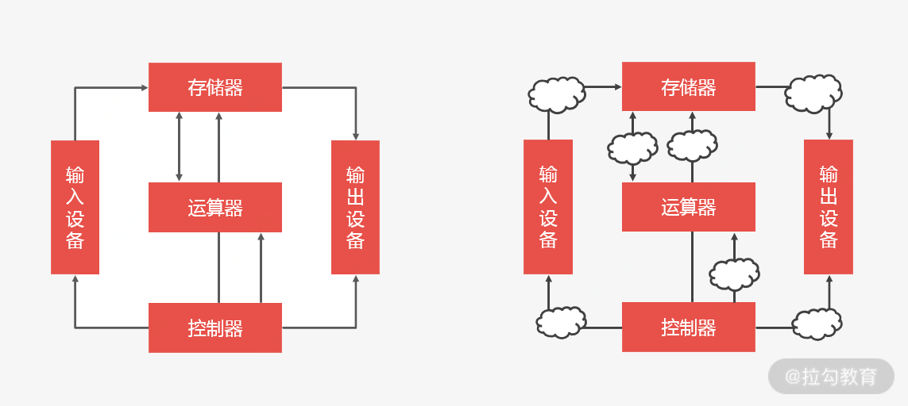

- 00 开篇词 中高级研发面试，逃不开架构设计这一环.md.html
- 01 研发工程师想提升面试竞争力，该具备这三个技术认知.md.html
- 02 研发工程师如何用架构师视角回答架构设计方案？.md.html
- 03 面试官如何考察与 CAP 有关的分布式理论？.md.html
- 04 亿级商品存储下，如何深度回答分布式系统的原理性问题？.md.html
- 05 海量并发场景下，如何回答分布式事务一致性问题？.md.html
- 06 分布式系统中，如何回答锁的实现原理？.md.html
- 07 RPC：如何在面试中展现出“造轮子”的能力？.md.html
- 08 MQ：如何回答消息队列的丢失、重复与积压问题.md.html
- 08 案例串联 如何让系统抗住双十一的预约抢购活动？.md.html
- 09 如何回答 MySQL 的索引原理与优化问题？.md.html
- 10 如何回答 MySQL 的事务隔离级别和锁的机制？.md.html
- 11 读多写少：MySQL 如何优化数据查询方案？.md.html
- 12 写多读少：MySQL 如何优化数据存储方案？.md.html
- 13 缓存原理：应对面试你要掌握 Redis 哪些原理？.md.html
- 14 缓存策略：面试中如何回答缓存穿透、雪崩等问题？.md.html
- 15 如何向面试官证明你做的系统是高可用的？.md.html
- 16 如何从架构师角度回答系统容错、降级等高可用问题？.md.html
- 17 如何向面试官证明你做的系统是高性能的？.md.html
- 18 如何从架构师角度回答怎么应对千万级流量的问题？.md.html
- 19 彩蛋 互联网架构设计面试，你需要掌握的知识体系.md.html
- 结束语 程序员的道、术、势.md.html
- 捐赠
19 彩蛋 互联网架构设计面试，你需要掌握的知识体系
研发工程师的职业成长路线，基本是初级研发工程师，进阶为中高级研发工程师，提升至架构师，然后再寻求更高的突破。这直接说明我们认同架构师的价值，想要努力成为架构师。虽然目标很明确，但我调研后发现，大多数研发工程师把“成为架构师”当作目标，但却没找到方法。
因为在工作中，不是每一个研发都有机会参与架构设计；很多公司也不会主动去培养你成为架构师。所以，有很多职场人在一家公司工作三年或五年之后并没有多大的提升。
而很多的架构师都是研发自己在机遇巧合下，遇到大项目、参与其中、趟了坑、解决了问题，最终形成自己的知识体系和解决问题的能力之后才成长起来的。那么如果没有这些条件，你还有没有途径成为一名架构师呢？
当然有，在我看来，你要先掌握架构师的知识体系，然后再通过实践进行检验，这样才能逐步成长为一名架构师。
架构师能力模型
很多研发同学经常问我：“成为架构师应该掌握哪些技术？”
在我看来，成为架构师是要掌握一定的知识储备，再经过项目历练，但你更应该通过“知识储备+项目历练”，看自己达到了什么能力，你的能力是否能够匹配架构师这个岗位。
换句话说，你是否具有架构师的能力模式？
我们拿互联网大厂（比如 BAT）的能力模型来对标，从它们对架构师的能力要求来看：能不能覆盖一个领域子方向，也就是能不能作为一个系统的技术负责人？比如交易系统的负责人、商品系统的负责人。换句话说，你能不能把握整个系统的规划、设计、落地，和演进。如果你能独挡这一面，就具备了成为架构师的条件。
那架构师的能力到底由哪几部分组成呢？
- 基础技术架构：这部分是纯技术架构，所有非功能性的技术都是基础技术的范畴。
- 业务架构：在业务场景下对业务需求的抽象。
- 开发技能：这是架构师落地架构的能力。
你要怎么理解这个模型呢？
举个例子，我们在开发时会经历需求分析、架构设计、架构选型、架构落地几个阶段，这几个阶段对架构师的能力要求总结为一句话就是“架构师要把握系统技术”。
- 在需求分析阶段：架构师对于业务架构，要给出一个合理的需求分析抽象模型。
- 在架构设计和架构选型阶段：架构师要充分考虑技术的合理性，制定合理的设计方案。
- 在架构落地阶段：架构师要能指导研发进行落地，并推进项目的执行。
你看，从需求分析、架构设计、到架构选型、再到架构落地，架构师都需要参与，而这些阶段体现出来的需求分析能力、架构设计能力、代码开发能力，最终都会作用在一个系统上，这就是所谓的“把握系统技术”。也就是说，你如果想成为架构师就要做到、做好系统开发各环节的技术把控！
那么在架构师能力模型的指引下，你要掌握哪些知识体系呢？
架构师知识体系
我们以互联网分布式系统架构师的知识体系为例，回顾一下 03 讲中的内容。
分布式系统看起来就像一个计算机。计算机包括五大体系结构（即冯诺依曼结构），它有五大部件：分别是控制器、运算器、存储器、输入及输出。你可以这么理解：一个分布式系统也包含这五大部件，其中最重要的是计算与存储。计算与存储由一系列网络节点组成，每个节点之间的通信就是输入与输出，各节点之间的调度管理就是控制器。

图 分布式架构技术组成
所以，对于从事互联网分布式设计的架构师来说，你可以从以下四个角度来进行知识体系的拆解。
- 存储
存储指分布式存储系统，你要理解什么是分布式存储系统？为什么选型分布式存储系统？以及分布式存储中关注哪些问题？
首先，为了解决数据的水平扩展，要做数据分片，因为分布式系统区别于传统单机系统就在于能将数据分布到多个节点，并在多个节点间实现负载均衡。这种数据水平扩容的操作叫数据分片。
数据分片会涉及分片规则，常见的有范围分片和哈希分片，不同的分片规则就有不同的分片算法，如哈希分片就会涉及哈希取模算法、虚拟桶算法、一致性哈希算法。
又因为数据要分布到多个节点，你还需要数据复制，数据复制就会存在同步复制和异步复制。为了保证数据的可靠性和可用性，增强系统容错，数据复制就会产生副本，副本则是分布式存储系统解决高可用的唯一手段。
而多个副本同步会产生一致性的问题，从而引出一致性问题的分类，如强一致性、弱一致、最终一致，要想解决一致性问题，会涉及一致性问题的协议：如两阶段提交协议（Two-PhraseCommit，2PC）、Paxos协议选举、向量时钟（VectorClock）、RWN协议、Raft协议。
多个副本还会带来主选举，这会涉及分布式锁的问题：多个机器竞争一个锁，当某个机器释放锁或者挂掉，其他机器可以竞争到锁，继续执行任务。为了解决锁的容错性，比如解决双主（脑裂）问题，就会涉及租约机制，租约机制可以解决网络分区问题造成的“双主”问题。
最后，为了衡量副本可用性和一致性，就会引出分布式系统的基础理论 CAP 、BASE，以及 PACELC。
这样一来，我们就梳理清楚了分布式存储的知识体系。可以说，分布式存储是分布式系统知识体系中最基础的理论，也是最复杂的问题。
- 计算
分布式计算就会涉及三个概念：并行计算、分布式计算、云计算。
- 并行计算：同时使用多种计算资源解决计算问题的过程，比如多线程就是一种并行计算；服务集群也是一种并行计算。
- 分布式计算：是从集群技术发展而来，区别在于集群虽然连接了多台机器，但某项具体的任务执行时还是会被转发到某台服务器上，分布式计算则将任务分割到多台服务器上并行计算，然后得到结果。
- 云计算：分布式计算 + 虚拟化技术的综合技术的统称，不同商业公司有着各自不同的定义，通俗来讲就是开发者利用云 API 开发应用，然后上传到云上托管，并提供给用户使用，而不关心云背后的运维和管理，以及机器资源分配等问题。
作为架构师，你要了解分布式领域中的计算模式，如分布式并行计算框架 Hadoop 中的 MapReduce 的设计思想，以及基于流式计算框架 Storm、Spark、Flink 的架构设计方案。
当然对于计算领域，很多公司会设立大数据架构师的岗位，如果你面试的是系统架构师，了解这部分知识体系即可，不用过度聚焦于分布式计算上，不过很多计算框架的设计理念还是很有参考价值的，值得你去学习了解。
- 输入输出
系统架构中的输入输出，是指系统间通信的技术。
其中会涉及一些基础知识，比如网络通信最基础的协议（诸如 TCP/UDP 协议等）；网络 I/O 模型（Blocking-IO，NonBlocking-IO、Asyn-IO），最后是偏应用的知识，需要了解例如连接复用、序列化/反序列化、RPC、MQ 消息队列等。
作为架构师，你要理解高性能的原理，掌握流量的流转过程以及应对方案，比如当请求到达网络设备时，你要依次考虑以下问题：
- 网络设备如何处理流量？这会涉及中断和缓存。
- 操作系统如何处理流量？这会涉及 I/O 模型，select、poll、epoll，以及 I/O 多路复用。
- 应用系统如何处理流量？这会涉及 NIO 的开发，如 Reactor 模式、Netty 框架原理等。
- 系统线程如何处理流量？还会涉及多线程的设计模式。
最后，你还要掌握分布式系统通信的核心技术：RPC 和 MQ。
- 控制器
你可以把分布式系统知识体系中的控制器，理解为系统架构中的调度系统，包括流量调度和资源调度。
- 流量调度（我们常说的流量控制）：作为架构师就要掌握流量控制的常用方案策略，比如负载均衡、服务路由、熔断、降级、限流等，其实常用的高可用、高性能的解决方案很多都是基于流量上的调度。
- 资源调度：如果我们将流量调度迁移到服务器的计算资源、存储资源或基础资源上面的话，就会引出另一种基于资源的调度，如 Mesos、Yarn 基于计算资源的调度；HDFS、GlusterFS、Ceph 基于存储资源的调度；Kubernetes、Mesos 基于容器资源的调度（包括计算、存储、网络等综合性的资源调度）。
总的来说，你至少要掌握常用系统调度设计，调度算法与负载策略。举个例子，如果让你对单个服务器的计算资源做调度，你至少要具备设计思路：让集群选举一个主节点，每个从节点会向主节点汇报自己的空闲资源，当请求到来时，主节点通过资源调度算法选择一个合适的从节点来处理该请求。
总结
无论你从事哪个领域的架构设计工作，都要明白作为架构师，一定是技术出身，但是要突破技术思维的限制，向上立足于部门和公司、向下管控系统和研发，站在全局的角度去规划、组织、系统技术的发展。
为了方便你理解，我把学习架构设计知识的思路总结为以下几点：
- 想要学习架构设计知识，可以从自己熟知的领域出发，这样你才有不断的正反馈，从而更有信心，容易理解新的知识。
- 形成知识网络图谱，如今技术错综复杂，各种技术又相互耦合，确实无法简单划分层次，所以我建议你把自己的核心知识梳理出一个脉络清晰的结构图，然后结合已有知识，再逐步将零散的知识点补充到这张网络图谱之上，这样你就拥有了核心知识和扩展知识。
- 养成对技术判断力，针对同一问题有不同方法，不同维度、不同角度的分析和对比。这是为了提升你今后在工作中对技术的领悟力。
© 2019 - 2023 Liangliang Lee. Powered by gin and hexo-theme-book.